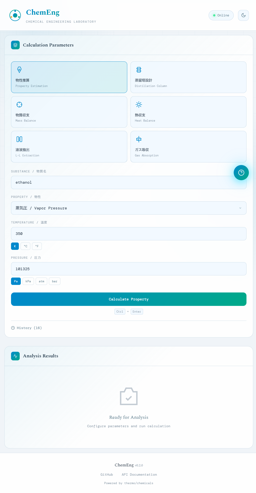
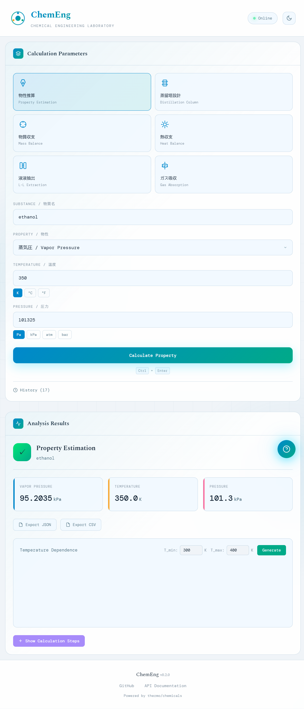
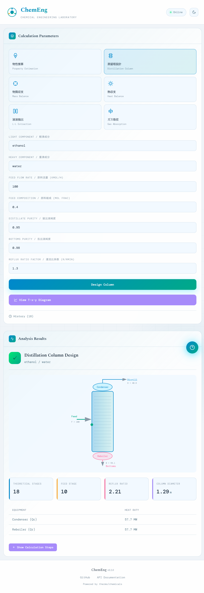
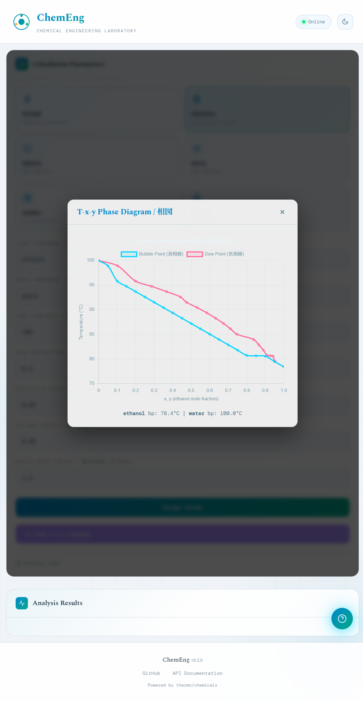
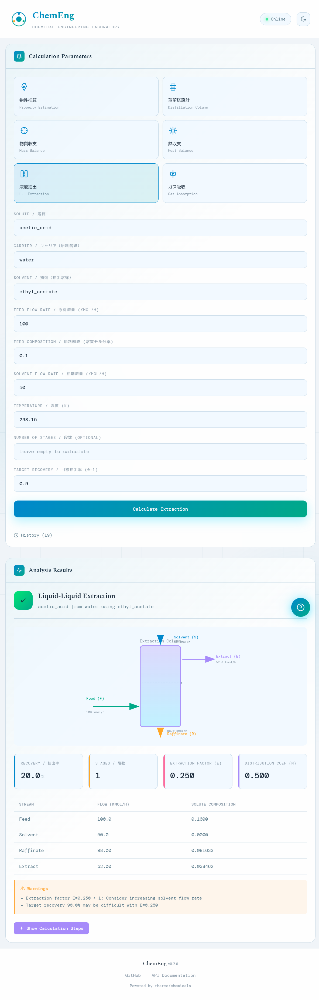
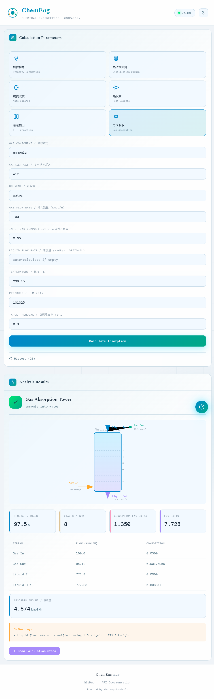
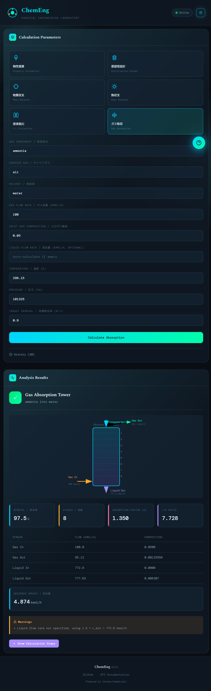

ChemEngは、化学工学の各種計算をブラウザ上で簡単に実行できるWebアプリケーションです。
🧪 物性推算
蒸気圧、密度、粘度などの物性計算
🏭 蒸留塔設計
McCabe-Thiele法による段数計算
⚖️ 物質収支
混合・分離プロセスの収支計算
🔥 熱収支
加熱・冷却・相変化の熱量計算
💧 液液抽出
向流多段抽出の設計計算
💨 ガス吸収
吸収塔の段数・液ガス比計算
Chemical Engineering Laboratory
化学工学計算Webアプリケーション 操作説明
Version 0.2.0
ChemEngは、化学工学の各種計算をブラウザ上で簡単に実行できるWebアプリケーションです。
蒸気圧、密度、粘度などの物性計算
McCabe-Thiele法による段数計算
混合・分離プロセスの収支計算
加熱・冷却・相変化の熱量計算
向流多段抽出の設計計算
吸収塔の段数・液ガス比計算

物質名（英語または日本語）を入力します。オートコンプリート機能で候補が表示されます。
蒸気圧、液密度、液粘度、蒸発熱、表面張力、沸点から選択します。
計算条件を設定します。単位ボタンで K/°C/°F や Pa/kPa/atm/bar を切り替えられます。
計算結果が右側のパネルに表示されます。


2成分系の気液平衡関係を温度-組成で表したグラフです。
液相組成 x に対応する沸点温度を示します。
気相組成 y に対応する露点温度を示します。
蒸留塔設計画面で View T-x-y Diagram ボタンをクリックすると、 選択した2成分系の相図が表示されます。



右上の月/太陽アイコンをクリックすると、ライトモード/ダークモードを切り替えられます。
過去の計算結果は「History」に保存され、いつでも参照できます。
計算結果はJSON/CSV形式でエクスポートできます。
左上の「?」ボタンでヘルプパネルを表示できます。

高精度な物性推算・相平衡計算
直感的な操作、ダークモード対応
T-x-y相図、プロセスフロー図
インストール不要、ブラウザで動作